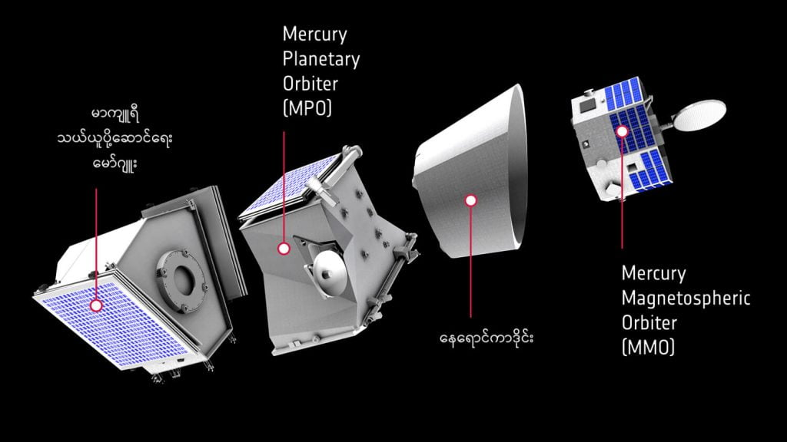
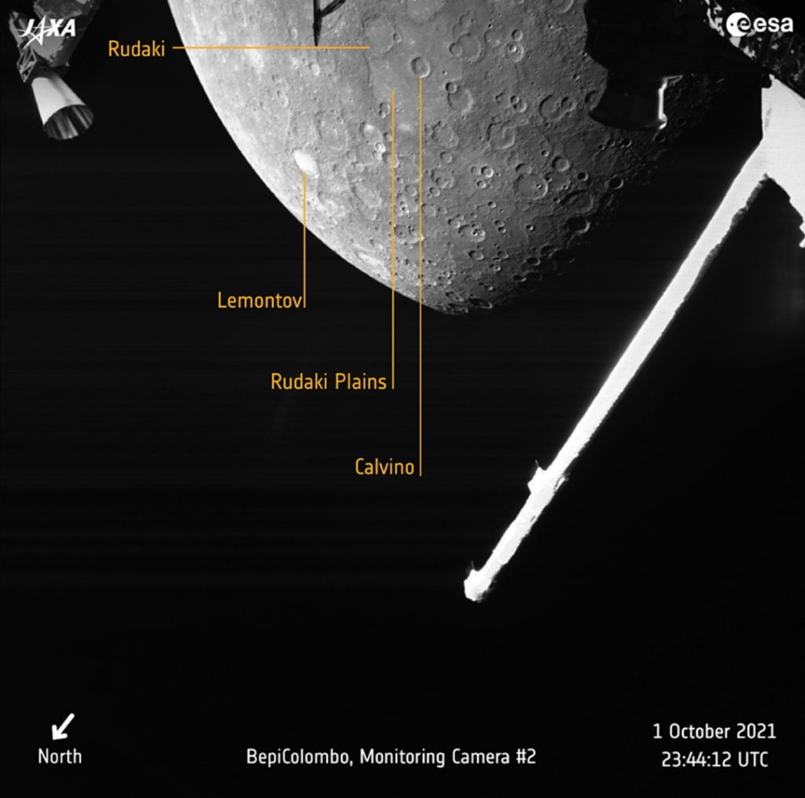

ဘက်ပီကိုလံဘို မစ်ရှင် (BepiColombo mission) လို့ အမည်ပေးထားတဲ့ ဒီစူးစမ်းလေ့လာရေး စီမံကိန်းရဲ့ ပထမ အဆင့်အဖြစ် ဒီအနီးကပ် ပျံသန်းမှုကို သောကြာနေ့ ည ၇.၃၄ အချိန်က ပြုလုပ်ခဲ့တာ ဖြစ်ပါတယ်။ ဒီပျံသန်းမှုမှာ မာကျူရီဂြိုလ်ရဲ့ မျက်နှာပြင်ကနေ မိုင် ၁၂၄ မိုင် (ကီလိုမီတာ ၂၀၀) ပဲ ဝေးတဲ့ နေရာကနေ ကပ်ပြီး ပျံသန်းခဲ့တာ ဖြစ်ပါတယ်။
ဒီလေ့လာရေး ယာဉ်ဟာ အခုအကြိမ်အပါအဝင် မာကျူရီ ဂြိုလ်နား ကပ်ပျံသန်းမှုကို စုစုပေါင်း ၆ ကြိမ်တိတိ ပြုလုပ်မှာ ဖြစ်ပါတယ်။ အခု ပျံသန်းမှု ပြုလုပ်စဉ်အတွင်း ဒီ ဘက်ပီကိုလံဘို စူးစမ်းလေ့လာရေးယာဉ်ဟာ မာကျူရီဂြိုလ်ရဲ့ မြေမျက်နှာပြင် ဓါတ်ပုံတွေ ရိုက်ကူးခဲ့သလို အခြား သိပ္ပံ တိုင်းထွာမှုတွေကိုလဲ ပြုလုပ်နိုင်ခဲ့ပါတယ်။
အခု မာကျူရီ စူးစမ်းလေ့လာမှု မစ်ရှင်ကို ဥရောပ အာကာသ အေဂျင်စီ (European Space Agency) နဲ့ ဂျပန် အာကာသ စူးစမ်းလေ့လာရေး အေဂျင်စီ (Japan Aerospace Exploration Agency) တို့ ပူးတွဲပြီး ၂၀၁၈ အောက်တိုဘာလက ပစ်လွှတ်ခဲ့တာ ဖြစ်ပါတယ်။ ဒီအာကာသယာဉ်ဟာ မာကျူရီ ဂြိုလ်နားက ကပ်ပြီး ပျံသန်းမှုကိ စုစုပေါင်း ၆ ကြိမ်ပြုလုပ်မှာ ဖြစ်ပြီး ဒီ ပျံသန်းမှု ၆ ကြိမ်ပြီတဲ့ နောက်မှာတော့ ၂၀၂၅ ခု ဒီဇင်ဘာလလောက်မှာ မာကျူရီဂြိုလ်ရဲ့ ဂြိုလ်ပတ်လမ်းကိုဝင်ရောက်သွားပြီး မာကျူရီဂြိုလ်ရဲ့ ဂြိုလ်တုတစ်စင်းအဖြစ် ဆက်ပတ်သွားမှာ ဖြစ်ပါတယ်။
ဒီလို ၂၀၂၅ ဒီဇင်ဘာမှာ မာကျူရီရဲ့ ဂြိုလ်ပတ်လမ်းကို ဝင်ရောက်သွားတဲ့အခါ တကယ်တမ်းက ဂြိုလ်တု နှစ်စင်းအဖြစ်နဲ့ ကွဲထွက်ပြီး မာကျူရီကို ပတ်နေမှာ ဖြစ်ပါတယ်။ ပထမ တစ်ခုက ဥရောပ အာကာသ အေဂျင်ဆီပိုင် မာကျူရီ ဂြိုလ်ပတ်ယာဉ် (ESA-led Mercury Planetary Orbiter) ဖြစ်ပြီး နောက်ဂြိုလ်တု တစ်ခုကတော့ ဂျပန်အာကာသ စူးစမ်းလေ့လာရေး အေဂျင်စီပိုင် မာကျူရီ မက်ဂနက်တို စဖီးယား လေ့လာရေး ဂြိုလ်ပတ်ယာဉ် (JAXA-led Mercury Magnetospheric Orbiter) တို့ ဖြစ်ပါတယ်။ ဒီဂြိုလ်တု နှစ်ခုဟာ ၂၀၂၅ ဒီဇင်ဘာ မတိုင်မီထိတော့ မာကျူရီ သယ်ယူပို့ဆောင်ရေး မိုဂျူးနဲ့ တွဲလျှက်ရှိနေမှာ ဖြစ်ပြီး မာကျူရီ ဂြိုလ်ပတ်လမ်းထဲ ဝင်သွားမှသာ ဂြိုလ်တု တစင်းစီ အနေနဲ့ ဝင်ရောက်သွားမှာ ဖြစ်ပါတယ်။

ပြီးခဲ့တဲ့ သောကြာနေ့က ဖြတ်ပျံခဲ့တဲ့ ပထမဆုံး ပျံသန်းမှုမှာတော့ အာကာသယာဉ်ရဲ့ ပင်မ ကင်မရာကို ပိတ်ထားခဲ့တဲ့အတွက် သိပ်ပြီး ကြည်လင်ပြတ်သားတဲ့ ဓါတ်ပုံတွေတော့ မရိုက်နိုင်ခဲ့ပါဘူး။ ဒါပေမယ့် ကျန်တဲ့ လေ့လာရေး ကင်မရာ ၃ လုံးအနက်က ၂ လုံးကို အသုံးပြုပြီး မာကျူရီရဲ့ မြောက်ခြမ်းနဲ့ တောင်ခြမ်းရဲ့ ဓါတ်ပုံတွေကို ရိုက်ယူနိုင်ခဲ့ပါတယ်။
ဒီပထမ ပျံသန်းမှုမှာ မာကျူရီရဲ့ ညဖက်ကျရောက်နေတဲ့ (နေနဲ့ဝေးရာဖက်ခြမ်း) ပေါ်က ဖြတ်ပြီး ပျံတာဖြစ်ပါတယ်။ ဒါ့ကြောင့်မို့ ညအချိန် ရိုက်ထားတဲ့ ပုံတွေကနေတော့ သိပ်ပြီး အသေးစိတ် မြင်ရမယ့်ပုံတွေတော့ ရမှာမဟုတ်ပါဘူး။

ဒီပထမ ဖြတ်ပျံသန်းမှု အတွင်းမှာ ဂြိုလ်တုနှစ်လုံးပေါ်က အချို့ သိပ္ပံတိုင်းထွာရေး ကိရိယာ အချို့ကိုတော့ ဖွင့်ထားမှာ ဖြစ်ပါတယ်။ ဒီကိရိယာတွေနဲ့ မာကျူရီရဲ့ သံလိုက်လှိုင်းအား၊ ဂြိုလ်ပေါ်ကို နေကနေ ကျရောက်တဲ့ ပလပ်စမာနဲ့ အခြားအမှုန်တွေကို လဲ လေ့လာနိုင်မှာပါ။
ဒီ သောကြာနေ့ ပျံသန်းမှုရဲ့ ထူးခြားချက်ကတော့ ဒီနေ့ဟာ အီတလီ နက္ခတ်ပညာရှင် ဂူဆက်ပီ ဘက်ပီ ကိုလမ်ဘို (Giuseppe “Bepi” Colombo) ရဲ့ ၁၀၁ နှစ်မြောက် မွေးနေ့နဲ့ တိုက်ဆိုင်နေတာပဲ ဖြစ်ပါတယ်။ ဒီအာကသ လေ့လာရေး ယာဉ်ကို ဘက်ပီ ကိုလမ်ဘို လို့ မှည့်ခေါ်တာကလဲ သူ့ကို ဂုဏ်ပြုတဲ့ အနေနဲ့ မှည့်ခေါ်တာပဲ ဖြစ်ပါတယ်။
ကိုလမ်ဘိုရဲ့ လေ့လာတွေ့ရှိမှုတွေကြောင့် ကျွန်တော်တို့ဟာ မာကျူရီရဲ့ လည်ပတ်မှုကို အသေးစိတ် သိရှိလာရတာပါ။ နောက်ပြီး နာဆာက အရင်လွှတ်တင်ခဲ့တဲ့ မရီနာ ၁၀ (Mariner 10) လေ့လာရေး ဂြိုလ်တုဟာလဲ ကိုလမ်ဘိုရဲ့ မာကျူရီဂြိုလ်နဲ့ သက်ဆိုင်တဲ့ တွက်ချက်မှုတွေကို အသုံးပြုပြီး မာကျူရီကို ၃ ခေါက်တောင် ဖြတ်ပျံနိုင်ခဲ့ပါတယ်။
ဒီ မရီနာ ၁၀ ဟာ မာကျူရီကို လေ့လာဖို့ ၁၉၇၄ ခုနှစ်က ပထမဆုံး လွှတ်တင်ခဲ့တဲ့ ဂြလ်တုပဲ ဖြစ်ပါတယ်။ ဒီလေ့လာရေးယာဉ်ဟာ မာကျူရီအနားကနေ ၃ခေါက်တောင် ဖြတ်ပျံနိုင်ခဲ့ပါတယ်။ နောက်တခါ ၂၀၀၈-၂၀၀၉ မှာ နာဆာရဲ့ Messenger အာကာသယာဉ်ဟာလဲ မာကျူရီကို ၃ ခေါက်ဖြတ်ပျံခဲ့ပြီး ၂၀၁၁ ကနေ ၂၀၁၅ ထိ မာကျူရီကို ပတ်ပြီး ပျံသန်းနေခဲ့ပါတယ်။
အခုတော့ ဒီမာကျူရီဂြိလ် လေ့လာရေး တာဝန်ကို ဘက်ပီကိုလမ်ဘို အာကာသယာဉ်က လက်လွှဲ တာဝန်ယူလိုက်ပါပြီ။ ဒီအာကာသယာဉ်ဟာ မာကျူရီကို ပတ်တဲ့ ဂြိုလ်တုတွေထဲမှာ ဒုတိယမြောက် ဂြိုလ်တုဖြစ်ပြီး နည်းပညာပိုင်း အနေနဲ့ဆို အဆင့်အမြင့်ဆုံး အရှုပ်ထွေးဆုံးလဲ ဖြစ်ပါတယ်။
“ဒီအာကာသယာဉ်ကနေ မာကျူရီရဲ့ မျက်နှာပြင်နဲ့ ကပ်ပျံပြီး ကောက်ယူရရှိတဲ့ အချက်အလက်တွေ ကို မြေပြင်တဖွဲ့လုံးက စောင့်မျှော်နေပါတယ်” လို့ ဒီစီမံကိန်းရဲ့ သိပ္ပံပညာရှင် တယောက် ဖြစ်တဲ့ ဂျိုဟန် ဘန်ကော့ဖ် (Johannes Benkhoff) က ပြောပါတယ်။ “ကျွန်တော် ၂၀၀၈ မှာ ဒီဘက်ပီကိုလမ်ဘို စီမံကိန်းကို စဝင်တော့ နာဆာကနေ မာကျူရီဂြိုလ် လေ့လာရေး Messenger အာကာသယာဉ်ကို လွှတ်တင်ခဲ့ပါတယ်။ အခုတော့ ကျွန်တော်တို့ အလှည့်ပေါ့ဗျာ။ စိတ်လှုပ်ရှားစရာ မကောင်းဘူးလား” လို့ သူက ဆက်ပြောပါတယ်။
ဘာ့ကြောင့်မာကျူရီဂြိုလ်ကိုလေ့လာချင်ရတာလဲ
မာကျူရီနဲ့ ပါတ်သက်တဲ့ မျက်နှာပြင် အပူချိန်၊ သူ့ရဲ့ ဖြစ်စဉ်သမိုင်းကြောင်း၊ လေထုဖွဲ့စည်းပုံ အစရှိတဲ့ သိပ္ပံဆိုင်ရာ အချက်အလက် အများစုကို အခုထိ မသိရှိရေ သေးပါဘူး။ ဒီလိုဖြစ်ရတာကလဲ ဂြိုလ်က နေနဲ့ အလွန်နီးတော့ စမ်းသပ်တိုင်းထွာရတာက ခက်နေလို့ပါ။ အတွင်းပိုင်း နေပတ်လမ်းမှာ ပတ်နေကြတဲ့ မာကျူရီ၊ ဗီးနပ်စ် (သောကြာဂြိုလ်)၊ ကမ္ဘာနဲ့ အင်္ဂါဂြိုလ်ဆိုတဲ့ ကျောက်နဲ့ဖွဲ့စည်းထားတဲ့ ဂြိလ်တွေကြားထဲမှာ ဒီ မာကျူရီက လေ့လာမှု အနည်းဆုံး ဖြစ်နေပါတယ်။မာကျူရီဂြိုလ်က အချိန် အတော်များများမှာ နေနဲ့ ကမ္ဘာကြား ရောက်ရောက်နေတာကလဲ သူ့ကို ဓါတ်ပုံရိုက်ဖို့ ပိုခက်ခဲစေပါတယ်။
ဒီ ဘက်ပီကိုလမ်ဘို အာကာသယာဉ်မှာ ဇီနွန် (Zenon gas) ဓါတ်ငွေ့ရည်သုံးထားတဲ့ နေရောင်ခြည်စွမ်းအင်သုံး ဒုံစက်တွေ ပါပါတယ်။ အာကာသယာဉ် အနေနဲ့ နေနား နီးလာတဲ့ အခါမှာ နေရဲ့ ဆွဲအားကို လွန်ဆန်နိုင်ဖို့ ဒီဒုံးစက်တွေကို တောက်လျှောက်ဖွင့်ထားရမှာ ဖြစ်ပါတယ်။ ပညာရှင်တွေရဲ့ အဆိုအရ မာကျူရီဂြိုလ်ကို ဂြိုလ်တုရောက်ဖို့ သုံးဆွဲရတဲ့ စွမ်းအင်ပမာဏဟာ ကမ္ဘာကနေ ပလူတို လောက်အထိ ရောက်ဖို့ သုံးစွဲရတဲ့ စွမ်းအင်ပမာဏထက်တောင် ပိုတယ်လို့ ဆိုပါတယ်။
မာကျူရီဂြိုလ် ပတ်ဝန်းကျင်က အပူချိန်ဟာ ၃၅၀ ဒီဂရီ စင်တီဂရိတ်လောက်ရှိပါတယ်။ ဒီအပူဒါဏ်ကို ခံနိုင်ဖို့အတွက် ဒီလေ့လာရေး ယာဉ်တွေကို တိုက်တေနီယံ သတ္တုစပ်နဲ့ ပြုလုပ်ထားတဲ့ အပူကာပြားတွေ တပ်ဆင်ထားရပါတယ်။
ဒီ စူးစမ်းလေ့လာရေးယာဉ် နှစ်စီးပေါ်မှာ ပါဝင်တဲ့ စမ်းစပ်ကိရိယာတွေက အဓိက အနေနဲ့ မာကျူရီရဲ့ ဝင်ရိုးစွန်းတွေမှာ ဖြစ်နေတဲ့ ရေခဲတွေရဲ့ သဘောသဘာဝကို လေ့လာဖို့နဲ့ ဘာ့ကြောင့် မာကျူရီမှာ သံလိုက်စက်ကွင်း ရှိနေရတာလဲ ဆိုတာတွေကို လေ့လာမှာ ဖြစ်ပါတယ်။ နောက်ပြီး ဂြိုလ်မျက်နှာပြင်က တွင်းကြီးတွေကိုလဲ လေ့လာမှာပါ။
မာကျူရီဟာ ကျွန်တော်တို့ လ ထက် အရွယ်နည်းနည်းလေးပဲ ပိုကြီးတာပါ။ ဒီလောက် သေးတဲ့ ဂြိုလ်သေးသေးလေး တစ်လုံးဖြစ်ပေမယ့် သူနဲ့ပါတ်သက်လို့ မသိတာက အတော်များပါတယ်။
သိပ္ပံပညာရှင်တွေ သေသေချာချာ ပြောနိုင်တာ တခုကတော့ မာကျူရီရဲ့ နေ့တွေဟာ အပူချိန် စင်တီဂရိတ် ၄၃၀ လောက်ထိ ပူပြင်းပေမယ့် ညဖက် ရောက်သွားရင် အပူချိန်ဟာ ရေခဲမှတ်အောက် အနှုတ် ၁၈၀ ဒီဂရီအထိ ထိုးဆင်းသွားတယ် ဆိုတာပါပဲ။ ဒီလိုဖြစ်ရတာကလဲ မာကျူရီရဲ့ လေထုက ပါးလွန်းတော့ အပူကို ထိန်းမထားနိုင်လို့ ဖြစ်ပါတယ်။
မာကျူရီက နေနဲ့ အနီးဆုံးဂြိုလ် ဖြစ်ပေမယ့် (မိုင်သန်း ၃၆ သန်းပဲ ဝေးပါတယ်) နေအဖွဲ့အစည်းထဲမှာ အပူဆုံးတော့ မဟုတ်ပါဘူး။ နေအဖွဲ့အစည်းထဲက အပူဆုံးဂြိုလ်က ဗီးနပ်စ် ခေါ် သောကြာဂြိုလ် ဖြစ်ပါတယ်။ ဒါပေမယ့် ဂြိုလ်တွေ အားလုံးထဲမှာ မာကျူရီဟာ အမြန်ဆုံးဂြိုလ် ဖြစ်ပါတယ်။ သူဟာ နေကို တစ်ပါတ်ပတ်ဖို့ အချိန် ၈၈ ရက်ပဲ ကြာပါတယ်။ ဒါ့ကြောင့်လဲ ရောမနတ်ဘုရား တွေထဲက တောင်ပံတပ်ထားတဲ့ ဖိနပ်ကိုစီးထားတဲ့ ခြေမြန်တော် မာကျူရီ နတ်မင်းရဲ့ အမည်ကို ပေးထားတာ ဖြစ်ပါတယ်။
အကယ်လို့ ကျွန်တော်တို့သာ မာကျူရီဂြိုလ်ပေါ်ကနေ နေကို ကြည့်မယ်ဆို အခုမြင်ရတာထက် ၃ ဆ ပိုကြီးတဲ့ နေကြီးကို မြင်ကြရမှာပါ။ နေရဲ့ အလင်းရောင်ကလဲကမ္ဘာပေါ်က မြင်ရတာထက် အဆ ၇ ဆ ပိုလင်းပါလိမ့်မယ်။
နောက်ပြီး မာကျူရီရဲ့ ထူးခြားချက် တခုကတော့ သူတစ်ပါတ်လည်ဖို့ အချိန် ၅၈ ရက်တောင် ကြာတာပဲ ဖြစ်ပါတယ်။ ဒါ့ကြောင့် နေကို တစ်ပါတ်ပတ်မိဖို့ ကမ္ဘာရက်နဲ့ ၈၈ ရက် ကြာပေမယ့် မာကျူရီရဲ့ ရက်နဲ့တွက်ရင်တော့ ၁ ရက် ခွဲပဲ ကြာပါတယ်။
Reference: Mercury mission flies by closest planet to the sun for the first time | CNN